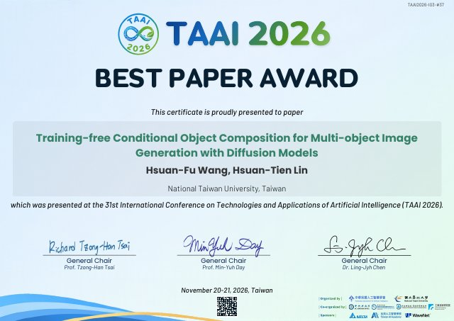
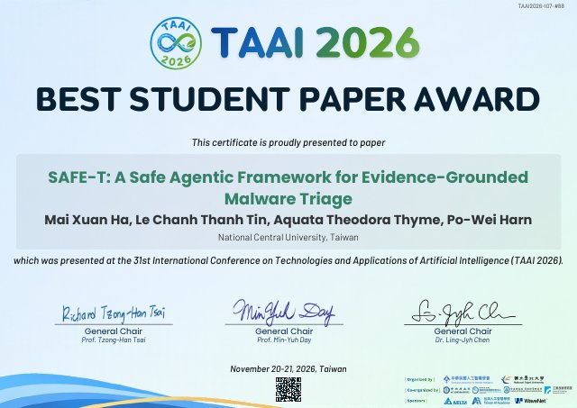
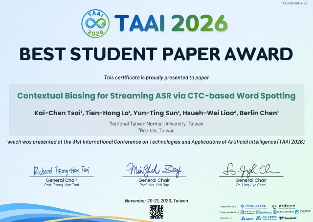
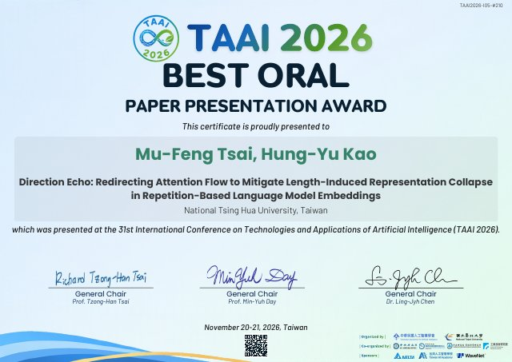
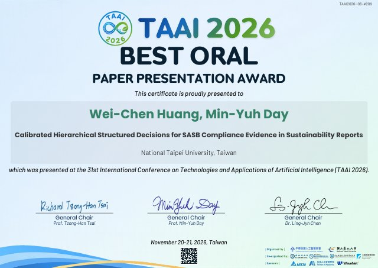
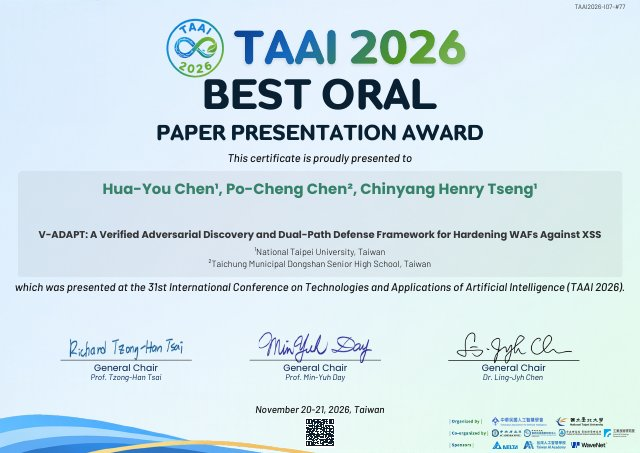

TAAI 2026 Award Certificates
Every TAAI 2026 award winner has a certificate page with a permanent link to cite or share, a preview, and the certificate as a PDF.
Every TAAI 2026 award winner has a certificate page with a permanent link to cite or share, a preview, and the certificate as a PDF.

LAWRENCE: A Benchmark for Adversarial Lawyering in Taiwanese Criminal Law

Training-free Conditional Object Composition for Multi-object Image Generation with Diffusion Models

Evaluating Cluster-Based Noise Exclusion in Disaster Social Media Imagery under Recall Constraints

Bridging Static and Agentic RAG for Taiwanese Historical Question Answering

SAFE-T: A Safe Agentic Framework for Evidence-Grounded Malware Triage

Contextual Biasing for Streaming ASR via CTC-based Word Spotting

Evidential Deep Learning with conditional entropy for glaucoma detection

Training-free Conditional Object Composition for Multi-object Image Generation with Diffusion Models

Environment Curriculum Generation via Vision-Language Models


Calibrated Hierarchical Structured Decisions for SASB Compliance Evidence in Sustainability Reports
